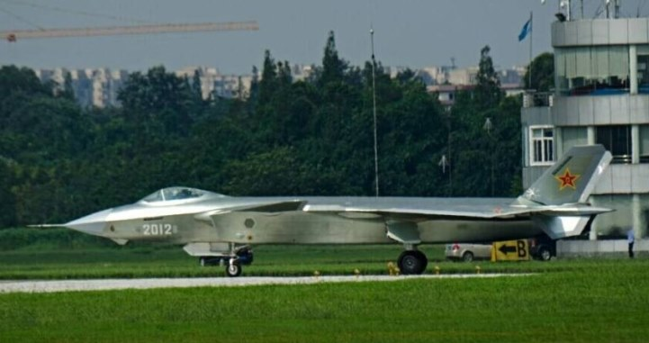
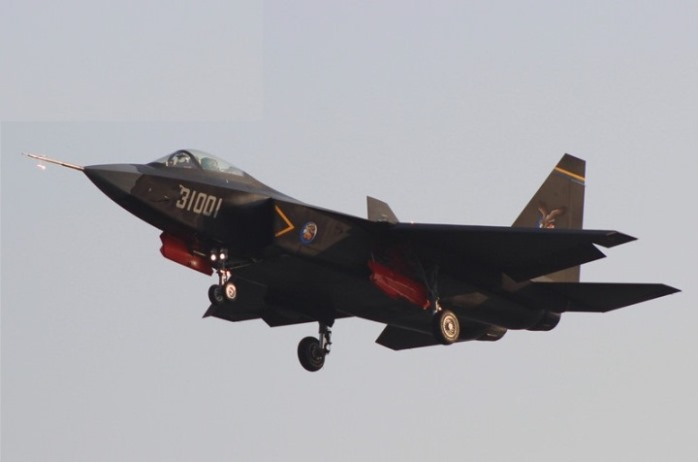
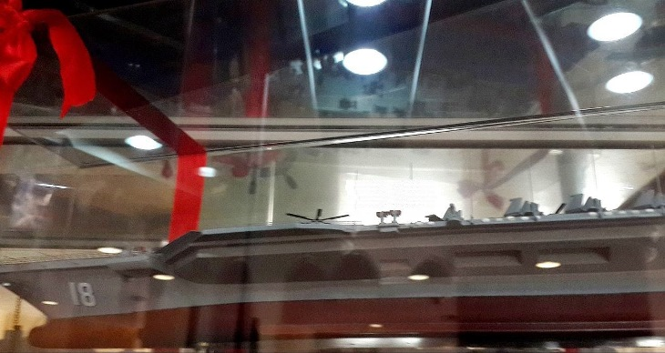
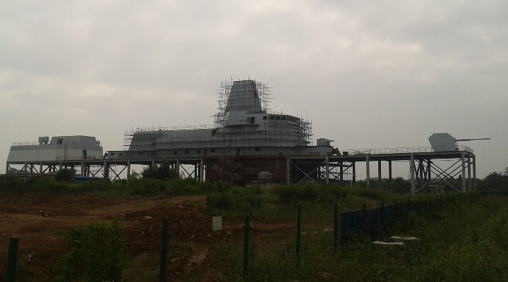

2014-07-22 16:29:00
既然我是新寫這個部落格，很多前幾個月有關中共海空軍的新聞都没有機會提起，所以乾脆在這裡一鍋端。這些小道消息還没有全部被證實，它們不一定是百分之百正确，我會以百分比來估計它們的可靠性。共軍向來極為重視情報和反情報，保密工夫天下第一，像我這様的業餘軍事分析人是不可能拿到完全可靠的訊息的，不得不聽聽小道消息，再以我所知的背景來判斷其可靠性，亦即所谓的educated guess。如果事後證實有猜錯的，還請包含。
【J20】2012號的照片已經出現了很多了。這是原型機的第二架（此前從2011年一月出現的200X系列是生產験證機，相當於軟體的Alpha版；原型機是Beta版；至於日本的“心神”，那是所謂的技術験證機，是給設計團隊練習用的，完全没有量產的可能），和第一架2011號看來一模一様。十幾年前F22的原型機做了十架，後來正式定型之後，大部分原型機也升級到量產版的標準，分發部隊使用。J20極可能會遵循這個先例，那麼正式量產就應该在2017年左右，正是五年前中共空軍副司令員何為榮說漏了嘴時所预言的。J20有两個關键部件還没有完成：WS15引擎和全數位化AESA雷達；後者應該在2016年定型，所以大概趕得上第一批量產，但是WS15原就预定2017年才定型，而且有謠言說進度目前已經落後，所以八成是得從第二批量產才開始装備了，在那之前只能用俄製的AL31。（以上可信度95+%）據說中共用的AL31已經改進到99M3版，比太行引擎可靠，性能接近F22的F119引擎，不過也有人說2012號装的還是稍舊的99M2版。（可信度50%）

【310工程】一般媒體稱之為J31，這絶對是錯的。310工程是瀋飛（瀋陽飛機設計所，又名601所）内部自己搞的技術験證機，用來騙經费的，將來扶正成真正的JXX的可能性小於10%。

【017號航空母艦】去年六月在大連造船厰和江南造船厰都出现了縮水版的航母分段，八月習近平視察大連造船厰，九月大連造船厰的母公司宣布收到“特大級訂單”，股票因此飛漲。小道消息指出習近平在視察之後，批准了訂單，目前前幾個分段已經接近完工，大連造船厰的最大型船台還在建造一艘超級油輪，今年底前完成後就輪到017號上船台，照片也將滿天飛了。據稱017號與遼寜號大同小異，主要的改進點在於把機庫放大，塔台縮小，以搭載更多的J15。估計於2018年交船，2020年整個戦鬥羣形成戦力。（可信度80%）
【018號航空母艦】本月初中共在一個内部的軍品展擺出了018號航空母艦的模型，明確地證實了018號將配備有彈射系統，不過那會是舊式的蒸汽彈射還是全新的電磁彈射目前没有定論，我個人倾向於前者，原因是中共海軍對蒸汽彈射已經研究了二十幾年，技術已經成熟，而電磁彈射是近十年的新東西，只有一個研究團隊，還要分心去研究新型反潛護衛艦（即傳說中的057級）的電動機。中共海軍在部署新科技上，向來是很穩健謹慎的。在動力方面，018號應該還是用燒重油的蒸汽輪機，而不是核子動力。總體看來，018號就像是中國版的小鹰號。估計於2019年或2020年在江南造船厰開建。（可信度55%）

【055級驅逐艦】四個月前，武漢船舶設計研究所建了055級的全尺寸陸上模型，用來測試各式雷達天線的電磁兼容性，所以055級在明年開建是可以確定的。至於技術指標還很難講（目前可看到的有沿用自052D級的PJ38 130公厘主炮和沿自僚寜艦的1130近防炮和FL3000N近防飛弹，不過最重要的雷達和主飛弹艙還看不到，有未證實的消息指出飛弹艙數將是112個），但其滿載排水量應該在12000噸以上，有說是12800噸的。這比美軍現役的Ticonderoga級導弹巡洋艦還要大，應該也是同様用來指揮航母戦鬥羣的水面艦隻的。（可信度95%）

【039B潜艇】也就是所謂的元級潜艇。今年年初，武漢造船廠把停工已久的第九艘039B建成了，但是外型稍有修改以减低阻力和噪音，因此這艘應該叫做039BG才對。據說中共海軍對039B的安静度非常不滿意，所以不會再多建了，將等到後續的039C設計完成才會續建柴油電動潜艇。（可信度70%）
【093G潜艇】中共的第三代（即已退役的091級是第一代，091G是第二代）核子動力攻撃潜艇093級早有照片證明。目前的謠言主要在猜測第四代的093G是否已建成。中共對核子動力潜艇的保密比對其他裝備更為嚴密，所以我很難確定答案何在；最近有謠言稱093G和094G在中共的八一建軍節將正式服役。至於再下一代的095級，剛於2012年立项研製，如果一切顺利，首艇將於2020年左右交付中共海軍；即使有些延误，也應該能趕得上加入018號航母戦鬥羣。（可信度50%）
【後註】加拿大《漢和防務評論》10月刊於2014年十月13日報導，大連造船廠2013年底已經舉行了航母鋼板的切割儀式，航母動力系統採用的是哈爾濱生產的鍋爐，採用蒸汽輪機動力，而航母的鋼板則是由上海寶山生產。